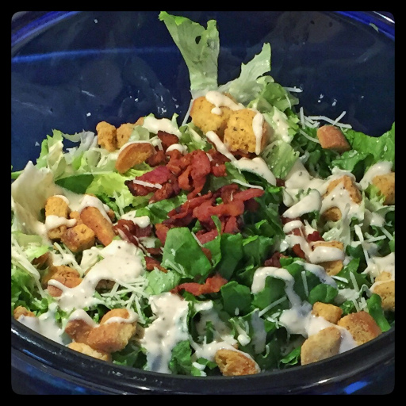

No-Kit Caesar Salad
A few fresh ingredients for a step above a bagged salad.

romaine, green leaf, iceberg, any lettuce will do
bottled caesar dressing
bacon
fresh parmesan reggiano, romano, or asiago
croutons
Slice bacon into bite-sized chunks and fry. Place bacon aside to cool when done.
Place paper towel in the bottom of a large salad bowl.
Rinse lettuce and shake off excess water.
Roughly chop the lettuce and put in the bowl. Rub the paper towl around the lettuce to remove more water.
Sprinkle the bacon and croutons over top of the lettuce.
Finely grate cheese over top.
Drizzle dressing to your liking.